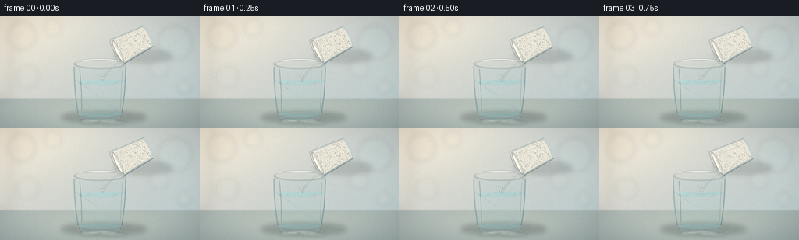
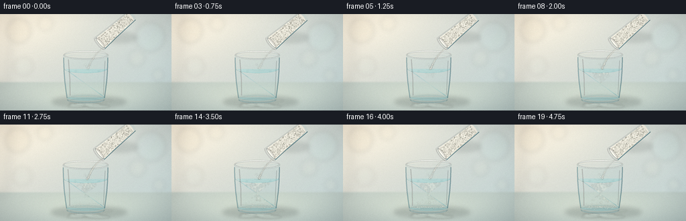
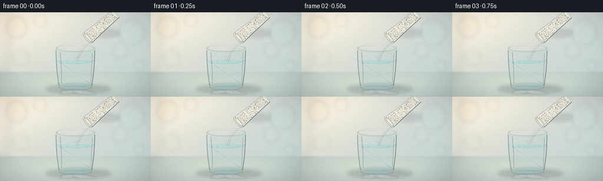
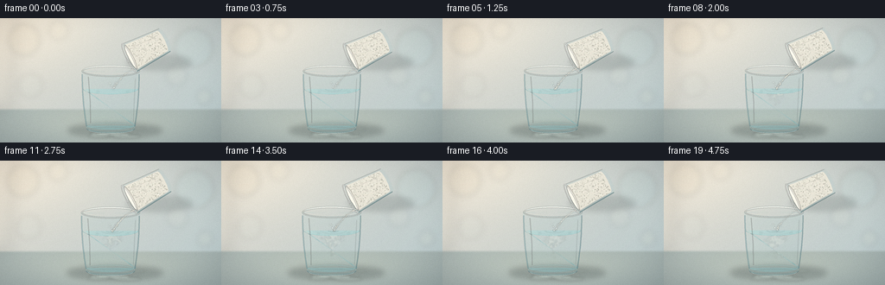
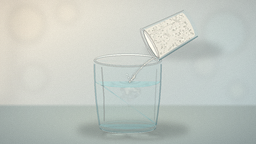
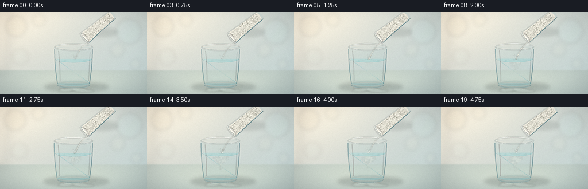
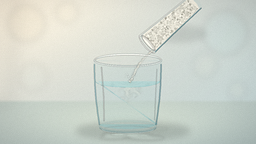
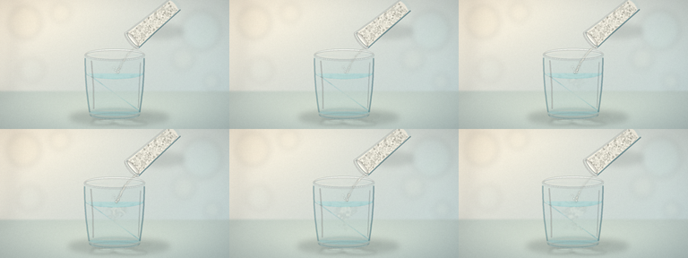

CODING AGENTS AS PIXEL WORLD MODELS
traex/DeepSeek-V4.1-Flash · material_0017
点击播放 · 原生 RGB 像素
逐轮保存的候选
回放视频、检查图与代码变化。
每份候选均可单独播放。实际图片检查记录在下方工具轨迹中。
候选 01播放与检查图
点击播放 · 原生 RGB 像素

展开代码变化
--- 上一保存版本
+++ 本次保存版本
@@ -0,0 +1,543 @@
+from pathlib import Path
+import math
+
+import numpy as np
+from PIL import Image, ImageDraw, ImageFilter
+
+import artifact_io
+
+
+W, H = 256, 144
+S = 4
+IW, IH = W * S, H * S
+FPS = 4.0
+N_FRAMES = 20
+CASE = Path(__file__).resolve().parent
+
+
+def xy(x, y):
+ return (x * S, y * S)
+
+
+def box(x0, y0, x1, y1):
+ return (int(round(x0 * S)), int(round(y0 * S)),
+ int(round(x1 * S)), int(round(y1 * S)))
+
+
+def rgba(color):
+ if len(color) == 3:
+ return color + (255,)
+ return color
+
+
+def lerp(a, b, t):
+ return a + (b - a) * t
+
+
+def smoothstep(t):
+ t = np.clip(t, 0.0, 1.0)
+ return t * t * (3.0 - 2.0 * t)
+
+
+def make_gradient(size, c0, c1, diagonal=0.7):
+ w, h = size
+ y, x = np.mgrid[0:h, 0:w].astype(np.float32)
+ t = (x / max(1, w - 1)) * diagonal + (y / max(1, h - 1)) * (1.0 - diagonal)
+ t = np.clip(t, 0.0, 1.0)[..., None]
+ return (np.asarray(c0, np.float32) * (1.0 - t) +
+ np.asarray(c1, np.float32) * t)
+
+
+def composite_mask(base, color, mask, opacity=1.0, blur=0.0):
+ if blur:
+ mask = mask.filter(ImageFilter.GaussianBlur(blur))
+ m = np.asarray(mask, np.float32) / 255.0 * opacity
+ arr = np.asarray(base, np.float32)
+ col = np.asarray(color, np.float32)
+ if arr.shape[2] == 4 and col.shape[2] == 3:
+ col = np.concatenate([col, np.full(col.shape[:2] + (1,), 255.0, np.float32)], axis=2)
+ if col.ndim == 3:
+ out = arr * (1.0 - m[..., None]) + col * m[..., None]
+ else:
+ out = arr * (1.0 - m[..., None]) + col[None, None, :] * m[..., None]
+ if out.shape[2] == 4:
+ out[..., 3] = arr[..., 3] * (1.0 - m) + 255.0 * m
+ return Image.fromarray(np.clip(out, 0, 255).astype(np.uint8), "RGBA")
+ return Image.fromarray(np.clip(out, 0, 255).astype(np.uint8))
+
+
+def soft_ellipse(layer, center, radii, fill, blur):
+ d = ImageDraw.Draw(layer)
+ cx, cy = xy(*center)
+ rx, ry = radii[0] * S, radii[1] * S
+ d.ellipse((cx - rx, cy - ry, cx + rx, cy + ry), fill=rgba(fill))
+ return layer.filter(ImageFilter.GaussianBlur(blur))
+
+
+def build_background():
+ top = make_gradient((IW, IH), (225, 219, 208), (184, 202, 205), 0.62)
+ yy, xx = np.mgrid[0:IH, 0:IW].astype(np.float32)
+ light = np.exp(-(((xx / IW - 0.12) / 0.40) ** 2 +
+ ((yy / IH - 0.02) / 0.44) ** 2))
+ top += light[..., None] * np.array([22, 17, 10], np.float32)
+
+ table_y = 104.0 * S
+ mask = np.clip((yy - table_y) / (3.0 * S), 0.0, 1.0)
+ table = make_gradient((IW, IH), (181, 190, 185), (154, 170, 171), 0.32)
+ radial = np.exp(-(((xx - 0.50 * IW) / (0.43 * IW)) ** 2 +
+ ((yy - 0.84 * IH) / (0.20 * IH)) ** 2))
+ table += radial[..., None] * np.array([22, 18, 10], np.float32)
+ arr = top * (1.0 - mask[..., None]) + table * mask[..., None]
+
+ bg = Image.fromarray(np.clip(arr, 0, 255).astype(np.uint8))
+
+ bokeh = Image.new("RGBA", (IW, IH), (0, 0, 0, 0))
+ d = ImageDraw.Draw(bokeh)
+ circles = [
+ (28, 25, 18, (242, 224, 188, 28)),
+ (68, 14, 11, (255, 239, 207, 22)),
+ (224, 34, 22, (181, 221, 220, 26)),
+ (204, 66, 12, (246, 239, 213, 18)),
+ (35, 78, 14, (204, 220, 210, 18)),
+ (236, 91, 9, (232, 228, 198, 20)),
+ ]
+ for cx, cy, r, col in circles:
+ x0, y0 = xy(cx - r, cy - r)
+ x1, y1 = xy(cx + r, cy + r)
+ d.ellipse((x0, y0, x1, y1), fill=col)
+ bokeh = bokeh.filter(ImageFilter.GaussianBlur(3.2 * S))
+ bg = Image.alpha_composite(bg.convert("RGBA"), bokeh).convert("RGB")
+
+ # A very quiet, out-of-focus vertical edge keeps the background from feeling flat.
+ edge = Image.new("RGBA", (IW, IH), (0, 0, 0, 0))
+ de = ImageDraw.Draw(edge)
+ de.polygon([(0, 0), (17 * S, 0), (12 * S, 105 * S), (0, 105 * S)],
+ fill=(255, 248, 226, 26))
+ edge = edge.filter(ImageFilter.GaussianBlur(7 * S))
+ bg = Image.alpha_composite(bg.convert("RGBA"), edge).convert("RGB")
+
+ # Table shadow and the cool reflected light under the glass.
+ shadow = Image.new("RGBA", (IW, IH), (0, 0, 0, 0))
+ shadow = soft_ellipse(shadow, (133, 130), (55, 8.0), (50, 60, 61, 70), 3.2 * S)
+ bg = Image.alpha_composite(bg.convert("RGBA"), shadow).convert("RGB")
+
+ caustic = Image.new("RGBA", (IW, IH), (0, 0, 0, 0))
+ dc = ImageDraw.Draw(caustic)
+ for i, (cx, cy, rx, ry, a) in enumerate([
+ (127, 134, 23, 2.6, 70), (147, 137, 16, 2.0, 48),
+ (113, 137, 12, 1.4, 40), (160, 128, 8, 1.2, 32),
+ ]):
+ x0, y0 = xy(cx - rx, cy - ry)
+ x1, y1 = xy(cx + rx, cy + ry)
+ dc.ellipse((x0, y0, x1, y1), fill=(225, 244, 235, a))
+ caustic = caustic.filter(ImageFilter.GaussianBlur(1.4 * S))
+ return Image.alpha_composite(bg.convert("RGBA"), caustic).convert("RGB")
+
+
+def side_curve(p0, p1, bend, n=18):
+ out = []
+ for i in range(n + 1):
+ t = i / n
+ x = lerp(p0[0], p1[0], t) + bend * math.sin(math.pi * t)
+ y = lerp(p0[1], p1[1], t)
+ out.append((x, y))
+ return out
+
+
+def glass_outline():
+ left = side_curve((94.5, 61.0), (99.8, 127.5), -1.7)
+ right = side_curve((161.5, 61.0), (156.2, 127.5), 1.7)
+ bottom = []
+ for i in range(19):
+ a = math.pi * i / 18
+ bottom.append((128.0 + 28.2 * math.cos(a), 127.8 + 5.5 * math.sin(a)))
+ top = []
+ for i in range(19):
+ a = math.pi * i / 18
+ top.append((128.0 + 33.5 * math.cos(a), 61.2 + 6.5 * math.sin(a)))
+ return left + bottom + list(reversed(right)) + list(reversed(top[1:-1]))
+
+
+def ellipse_points(cx, cy, rx, ry, n=48):
+ return [(cx + rx * math.cos(2 * math.pi * i / n),
+ cy + ry * math.sin(2 * math.pi * i / n)) for i in range(n)]
+
+
+def draw_glass(base, frame):
+ base_rgba = base.convert("RGBA")
+ draw = ImageDraw.Draw(base_rgba)
+ outline = glass_outline()
+
+ # Back-wall tint, slightly darker at the right.
+ body_mask = Image.new("L", (IW, IH), 0)
+ ImageDraw.Draw(body_mask).polygon([xy(x, y) for x, y in outline], fill=255)
+ body_color = make_gradient((IW, IH), (185, 220, 220), (143, 180, 186), 0.80)
+ base_rgba = composite_mask(base_rgba, body_color, body_mask, 0.19, 0.35 * S).convert("RGBA")
+
+ # Water volume, clipped inside the glass.
+ water_poly = []
+ for i in range(25):
+ a = math.pi * i / 24
+ water_poly.append((128.0 + 31.8 * math.cos(a), 82.0 + 6.1 * math.sin(a)))
+ water_poly += [(157.5, 124.5)]
+ for i in range(17):
+ a = math.pi * i / 16
+ water_poly.append((128.0 + 27.6 * math.cos(math.pi - a), 124.6 + 4.5 * math.sin(a)))
+ water_poly += [(98.5, 82.0)]
+ wmask = Image.new("L", (IW, IH), 0)
+ ImageDraw.Draw(wmask).polygon([xy(x, y) for x, y in water_poly], fill=255)
+ water_color = make_gradient((IW, IH), (185, 226, 224), (94, 165, 175), 0.88)
+ base_rgba = composite_mask(base_rgba, water_color, wmask, 0.37, 0.28 * S).convert("RGBA")
+
+ # Refracted vertical bands give the water volume some optical structure.
+ band = Image.new("RGBA", (IW, IH), (0, 0, 0, 0))
+ db = ImageDraw.Draw(band)
+ bands = [
+ (103, 84, 108, 124, (224, 247, 242, 36), 1.8),
+ (113, 84, 110, 124, (91, 154, 164, 30), 2.6),
+ (147, 84, 151, 124, (67, 135, 148, 26), 3.4),
+ (154, 84, 153, 124, (228, 249, 243, 32), 1.7),
+ ]
+ for x0, y0, x1, y1, col, width in bands:
+ db.line([xy(x0, y0), xy(x1, y1)], fill=col, width=max(1, int(width * S)))
+ band = band.filter(ImageFilter.GaussianBlur(0.75 * S))
+ band.putalpha(Image.composite(band.getchannel("A"), Image.new("L", (IW, IH), 0), wmask))
+ base_rgba = Image.alpha_composite(base_rgba, band)
+
+ # Water surface and moving elliptical rings.
+ surf = Image.new("RGBA", (IW, IH), (0, 0, 0, 0))
+ ds = ImageDraw.Draw(surf)
+ ds.ellipse(box(96.2, 75.8, 159.8, 88.2), fill=(177, 225, 222, 118))
+ ds.ellipse(box(98.0, 77.0, 158.0, 86.9), fill=(207, 239, 233, 58))
+ surf = surf.filter(ImageFilter.GaussianBlur(0.35 * S))
+ surf.putalpha(Image.composite(surf.getchannel("A"), Image.new("L", (IW, IH), 0), wmask))
+ base_rgba = Image.alpha_composite(base_rgba, surf)
+
+ rings = Image.new("RGBA", (IW, IH), (0, 0, 0, 0))
+ dr = ImageDraw.Draw(rings)
+ t = frame / (N_FRAMES - 1)
+ for k in range(3):
+ phase = ((frame - k * 3.4) / 9.0) % 1.0
+ r = 2.0 + phase * 23.0
+ alpha = int(88 * (1.0 - phase) * smoothstep((frame + 1) / 5.0))
+ if alpha > 3:
+ dr.ellipse(box(130.0 - r, 81.8 - 0.27 * r,
+ 130.0 + r, 81.8 + 0.27 * r),
+ outline=(237, 253, 247, alpha),
+ width=max(1, int(0.55 * S)))
+ rings = rings.filter(ImageFilter.GaussianBlur(0.35 * S))
+ rings.putalpha(Image.composite(rings.getchannel("A"), Image.new("L", (IW, IH), 0), wmask))
+ base_rgba = Image.alpha_composite(base_rgba, rings)
+
+ # Front rim and the glass lip. Several thin arcs read better than one thick stroke.
+ rim = Image.new("RGBA", (IW, IH), (0, 0, 0, 0))
+ dm = ImageDraw.Draw(rim)
+ dm.arc(box(94.5, 54.7, 161.5, 67.7), 0, 360, fill=(236, 251, 246, 160),
+ width=max(1, int(0.70 * S)))
+ dm.arc(box(96.2, 56.0, 159.8, 66.3), 4, 356, fill=(88, 153, 163, 118),
+ width=max(1, int(0.35 * S)))
+ dm.arc(box(94.5, 55.2, 161.5, 67.1), 192, 348, fill=(255, 255, 247, 218),
+ width=max(1, int(1.0 * S)))
+ dm.arc(box(95.2, 55.9, 160.8, 66.8), 10, 172, fill=(255, 255, 252, 172),
+ width=max(1, int(0.55 * S)))
+ rim = rim.filter(ImageFilter.GaussianBlur(0.22 * S))
+ base_rgba = Image.alpha_composite(base_rgba, rim)
+
+ # Sidewalls: one cool shadow edge and two narrow specular ribbons.
+ walls = Image.new("RGBA", (IW, IH), (0, 0, 0, 0))
+ dw = ImageDraw.Draw(walls)
+ left_pts = side_curve((95.1, 65.0), (100.2, 125.0), -1.3)
+ right_pts = side_curve((160.9, 65.0), (155.8, 125.0), 1.3)
+ dw.line([xy(x, y) for x, y in left_pts], fill=(71, 132, 145, 82),
+ width=max(1, int(1.25 * S)), joint="curve")
+ dw.line([xy(x, y) for x, y in right_pts], fill=(63, 119, 132, 100),
+ width=max(1, int(1.15 * S)), joint="curve")
+ dw.line([xy(102.0, 68.0), xy(104.3, 98.0), xy(104.7, 121.0)],
+ fill=(255, 255, 250, 172), width=max(1, int(0.65 * S)), joint="curve")
+ dw.line([xy(156.7, 70.0), xy(155.1, 101.0), xy(154.4, 120.0)],
+ fill=(242, 255, 251, 116), width=max(1, int(0.48 * S)), joint="curve")
+ dw.arc(box(100.0, 120.0, 156.0, 132.6), 8, 172, fill=(232, 251, 244, 100),
+ width=max(1, int(0.5 * S)))
+ walls = walls.filter(ImageFilter.GaussianBlur(0.32 * S))
+ base_rgba = Image.alpha_composite(base_rgba, walls)
+
+ # Thick glass foot, with a cool inner shadow and a bright front edge.
+ foot = Image.new("RGBA", (IW, IH), (0, 0, 0, 0))
+ df = ImageDraw.Draw(foot)
+ df.arc(box(99.7, 120.5, 156.3, 132.8), 0, 360, fill=(153, 195, 194, 52),
+ width=max(1, int(1.8 * S)))
+ df.arc(box(100.0, 122.0, 156.0, 133.2), 4, 176, fill=(54, 105, 119, 78),
+ width=max(1, int(1.1 * S)))
+ df.arc(box(102.0, 125.0, 154.0, 133.6), 7, 173, fill=(242, 254, 248, 142),
+ width=max(1, int(0.75 * S)))
+ df.arc(box(103.0, 126.0, 153.0, 132.8), 188, 352, fill=(255, 255, 251, 98),
+ width=max(1, int(0.55 * S)))
+ foot = foot.filter(ImageFilter.GaussianBlur(0.25 * S))
+ base_rgba = Image.alpha_composite(base_rgba, foot)
+
+ # A couple of small reflections on the table.
+ refl = Image.new("RGBA", (IW, IH), (0, 0, 0, 0))
+ drf = ImageDraw.Draw(refl)
+ for cx, cy, rx, ry, a in [(119, 134.5, 8.5, 1.0, 64),
+ (144, 135.5, 6.0, 0.8, 42),
+ (156, 133.2, 3.8, 0.65, 30)]:
+ drf.ellipse(box(cx - rx, cy - ry, cx + rx, cy + ry),
+ fill=(231, 249, 241, a))
+ refl = refl.filter(ImageFilter.GaussianBlur(0.7 * S))
+ base_rgba = Image.alpha_composite(base_rgba, refl)
+ return base_rgba.convert("RGB")
+
+
+def cup_geometry(frame):
+ # The cup is seen almost from the side. Its mouth points down-left toward the glass.
+ theta = math.radians(-27.0 + 1.3 * math.sin(frame * 0.42))
+ d = np.array([math.cos(theta), math.sin(theta)], np.float32)
+ u = np.array([-math.sin(theta), math.cos(theta)], np.float32)
+ mouth = np.array([149.5, 46.0], np.float32)
+
+ def pt(lx, ly):
+ p = mouth + u * lx + d * ly
+ return (float(p[0]), float(p[1]))
+
+ return mouth, d, u, pt
+
+
+def draw_salt_cup(base, frame):
+ out = base.convert("RGBA")
+ mouth, d, u, pt = cup_geometry(frame)
+ left_side = [pt(-18.0, 0.0), pt(-16.2, 22.0), pt(-14.5, 46.0)]
+ right_side = [pt(18.0, 0.0), pt(16.4, 22.0), pt(14.8, 46.0)]
+ bottom = [pt(14.8 * math.cos(math.pi * i / 18),
+ 46.0 + 3.6 * math.sin(math.pi * i / 18)) for i in range(19)]
+ body_pts = left_side + bottom + list(reversed(right_side))
+
+ # Soft contact shadow on the upper-right background.
+ shadow = Image.new("RGBA", (IW, IH), (0, 0, 0, 0))
+ shadow = soft_ellipse(shadow, (184, 51), (38, 9), (54, 61, 59, 44), 3.0 * S)
+ out = Image.alpha_composite(out, shadow)
+
+ body_mask = Image.new("L", (IW, IH), 0)
+ ImageDraw.Draw(body_mask).polygon([xy(x, y) for x, y in body_pts], fill=255)
+
+ # Thin glass shell.
+ shell_color = make_gradient((IW, IH), (208, 232, 229), (151, 188, 190), 0.85)
+ out = composite_mask(out, shell_color, body_mask, 0.16, 0.25 * S).convert("RGBA")
+
+ # Salt occupies the body, inset slightly from the glass.
+ salt_pts = [pt(-15.6, 3.0), pt(-14.1, 22.0), pt(-12.9, 43.0)]
+ salt_bottom = [pt(13.0 * math.cos(math.pi * i / 18),
+ 43.0 + 2.8 * math.sin(math.pi * i / 18)) for i in range(19)]
+ salt_pts += salt_bottom + [pt(13.1, 43.0), pt(14.2, 22.0), pt(15.8, 3.0)]
+ salt_mask = Image.new("L", (IW, IH), 0)
+ ImageDraw.Draw(salt_mask).polygon([xy(x, y) for x, y in salt_pts], fill=255)
+ salt_color = make_gradient((IW, IH), (248, 244, 230), (218, 214, 201), 0.40)
+ out = composite_mask(out, salt_color, salt_mask, 0.96, 0.28 * S).convert("RGBA")
+
+ # Granular salt texture, clipped to the salt body.
+ tex = Image.new("RGBA", (IW, IH), (0, 0, 0, 0))
+ dt = ImageDraw.Draw(tex)
+ rng = np.random.default_rng(171)
+ for i in range(560):
+ lx = rng.uniform(-13.5, 13.5)
+ ly = rng.uniform(5.0, 43.0)
+ px, py = pt(lx, ly)
+ if not (0 <= px < W and 0 <= py < H):
+ continue
+ r = rng.uniform(0.28, 0.92)
+ c = int(rng.uniform(165, 250))
+ col = (c, c, max(0, c - 12), int(rng.uniform(50, 160)))
+ dt.ellipse(box(px - r, py - r, px + r, py + r), fill=col)
+ tex.putalpha(Image.composite(tex.getchannel("A"), Image.new("L", (IW, IH), 0), salt_mask))
+ out = Image.alpha_composite(out, tex)
+
+ # The salt surface at the open mouth.
+ surf = Image.new("RGBA", (IW, IH), (0, 0, 0, 0))
+ dsurf = ImageDraw.Draw(surf)
+ surf_pts = [pt(15.2 * math.cos(2 * math.pi * i / 60),
+ 2.0 + 2.6 * math.sin(2 * math.pi * i / 60)) for i in range(60)]
+ dsurf.polygon([xy(x, y) for x, y in surf_pts], fill=(255, 252, 239, 230))
+ surf = surf.filter(ImageFilter.GaussianBlur(0.35 * S))
+ out = Image.alpha_composite(out, surf)
+
+ # Glass edges and mouth rim.
+ glass = Image.new("RGBA", (IW, IH), (0, 0, 0, 0))
+ dg = ImageDraw.Draw(glass)
+ dg.line([xy(x, y) for x, y in [pt(-18.0, 0.0), pt(-16.2, 22.0), pt(-14.5, 46.0)]],
+ fill=(255, 255, 248, 154), width=max(1, int(0.70 * S)), joint="curve")
+ dg.line([xy(x, y) for x, y in [pt(18.0, 0.0), pt(16.4, 22.0), pt(14.8, 46.0)]],
+ fill=(86, 143, 151, 148), width=max(1, int(0.82 * S)), joint="curve")
+ dg.line([xy(x, y) for x, y in [pt(-9.0, 5.0), pt(-8.3, 28.0), pt(-7.8, 41.0)]],
+ fill=(255, 255, 250, 84), width=max(1, int(0.35 * S)), joint="curve")
+ rim_pts = [pt(18.0 * math.cos(2 * math.pi * i / 64),
+ 3.2 * math.sin(2 * math.pi * i / 64)) for i in range(65)]
+ dg.line([xy(x, y) for x, y in rim_pts], fill=(255, 255, 250, 205),
+ width=max(1, int(0.78 * S)), joint="curve")
+ glass = glass.filter(ImageFilter.GaussianBlur(0.25 * S))
+ out = Image.alpha_composite(out, glass)
+ return out.convert("RGB"), mouth, d, u, pt
+
+
+def stream_strength(frame):
+ # Gentle start, sustained pour, then a slow taper over the final second.
+ if frame <= 2:
+ return 0.18 + 0.10 * frame
+ if frame <= 13:
+ return smoothstep((frame - 2) / 4.0)
+ return max(0.18, 1.0 - 0.22 * (frame - 13))
+
+
+def draw_stream_and_cloud(base, frame, mouth, d, u, pt):
+ strength = stream_strength(frame)
+ impact = np.array([130.5, 82.3], np.float32)
+ lip = np.array(pt(13.6, 1.8), np.float32)
+
+ # A faint airborne powder veil makes the narrow stream readable at 256 px.
+ veil = Image.new("RGBA", (IW, IH), (0, 0, 0, 0))
+ dv = ImageDraw.Draw(veil)
+ path = []
+ for i in range(21):
+ p = i / 20.0
+ x = lerp(lip[0], impact[0], p) - 2.3 * math.sin(math.pi * p)
+ y = lerp(lip[1], impact[1], p ** 1.25)
+ path.append((x, y))
+ for i in range(len(path) - 1):
+ p = i / (len(path) - 1)
+ width = lerp(0.55, 2.5, p)
+ alpha = int((35 + 32 * strength) * (0.45 + 0.55 * p))
+ dv.line([xy(*path[i]), xy(*path[i + 1])],
+ fill=(255, 249, 232, alpha), width=max(1, int(width * S)))
+ veil = veil.filter(ImageFilter.GaussianBlur(0.8 * S))
+ base = Image.alpha_composite(base.convert("RGBA"), veil).convert("RGB")
+
+ # Individual grains, with short motion trails.
+ grains = Image.new("RGBA", (IW, IH), (0, 0, 0, 0))
+ dg = ImageDraw.Draw(grains)
+ rng = np.random.default_rng(3041)
+ n_seed = 128
+ for i in range(n_seed):
+ birth = rng.uniform(-7.0, 18.0)
+ travel = rng.uniform(3.4, 7.0)
+ local_t = (frame - birth) / travel
+ if local_t < 0.0 or local_t > 1.02:
+ continue
+ if rng.random() > 0.32 + 0.68 * strength:
+ continue
+ p = min(1.0, local_t)
+ jitter = rng.normal(0, 0.55)
+ lateral = rng.normal(0, 0.35)
+ x = lerp(lip[0], impact[0], p) - 2.3 * math.sin(math.pi * p) + lateral + jitter * p
+ y = lerp(lip[1], impact[1], p ** 1.22)
+ rad = rng.uniform(0.34, 0.95)
+ c = int(rng.uniform(205, 255))
+ alpha = int(rng.uniform(92, 208) * (0.50 + 0.50 * strength))
+ dg.ellipse(box(x - rad, y - rad, x + rad, y + rad),
+ fill=(c, c - 3, max(0, c - 17), alpha))
+ trail = min(0.38, local_t)
+ px = lerp(lip[0], impact[0], max(0.0, p - trail)) - 2.3 * math.sin(math.pi * max(0.0, p - trail)) + lateral
+ py = lerp(lip[1], impact[1], max(0.0, p - trail) ** 1.22)
+ dg.line([xy(px, py), xy(x, y)], fill=(255, 250, 233, int(alpha * 0.42)),
+ width=max(1, int(rad * 0.55 * S)))
+ grains = grains.filter(ImageFilter.GaussianBlur(0.24 * S))
+ base = Image.alpha_composite(base.convert("RGBA"), grains).convert("RGB")
+
+ # Salt cloud inside the water. It grows from the impact point and settles slowly.
+ cloud = Image.new("RGBA", (IW, IH), (0, 0, 0, 0))
+ dc = ImageDraw.Draw(cloud)
+ crng = np.random.default_rng(8801)
+ cloud_level = smoothstep((frame - 1.0) / 10.0)
+ for i in range(230):
+ birth = crng.uniform(1.0, 15.0)
+ age = frame - birth
+ if age < 0:
+ continue
+ p = min(1.0, age / 10.0)
+ angle = crng.uniform(-math.pi, math.pi)
+ spread = 1.5 + 13.0 * (p ** 0.72)
+ x = impact[0] + math.cos(angle) * spread * crng.uniform(0.25, 1.0)
+ y = impact[1] + 2.0 + 25.0 * p * crng.uniform(0.18, 1.0) + math.sin(angle) * spread * 0.27
+ rad = crng.uniform(0.26, 1.25) * (0.72 + 0.28 * p)
+ alpha = int(crng.uniform(24, 92) * cloud_level * (1.0 - 0.32 * p))
+ dc.ellipse(box(x - rad, y - rad, x + rad, y + rad),
+ fill=(247, 247, 231, alpha))
+ cloud = cloud.filter(ImageFilter.GaussianBlur(0.72 * S))
+ water_clip = Image.new("L", (IW, IH), 0)
+ dw = ImageDraw.Draw(water_clip)
+ poly = []
+ for i in range(28):
+ a = math.pi * i / 27
+ poly.append((128.0 + 30.6 * math.cos(a), 82.0 + 5.7 * math.sin(a)))
+ poly += [(156.4, 124.0), (128.0, 128.4), (99.6, 124.0)]
+ dw.polygon([xy(x, y) for x, y in poly], fill=255)
+ cloud.putalpha(Image.composite(cloud.getchannel("A"), Image.new("L", (IW, IH), 0), water_clip))
+ base = Image.alpha_composite(base.convert("RGBA"), cloud).convert("RGB")
+
+ # Tiny splash crown and droplets at the water line.
+ splash = Image.new("RGBA", (IW, IH), (0, 0, 0, 0))
+ dsp = ImageDraw.Draw(splash)
+ for i in range(22):
+ srng = np.random.default_rng(4100 + i)
+ phase = ((frame - 3.0 - i * 0.42) / 5.0) % 1.0
+ if phase <= 0 or phase >= 1:
+ continue
+ side = -1 if i % 2 else 1
+ x = impact[0] + side * (1.0 + 5.5 * phase)
+ y = 82.0 - 7.5 * phase * (1.0 - phase) * 4.0
+ a = int(125 * (1.0 - phase))
+ rad = 0.35 + 0.55 * (1.0 - phase)
+ dsp.ellipse(box(x - rad, y - rad, x + rad, y + rad),
+ fill=(247, 255, 249, a))
+ splash = splash.filter(ImageFilter.GaussianBlur(0.3 * S))
+ base = Image.alpha_composite(base.convert("RGBA"), splash).convert("RGB")
+ return base
+
+
+def camera_transform(img, frame):
+ t = frame / (N_FRAMES - 1)
+ scale = 1.0 + 0.022 * smoothstep(t)
+ crop_w, crop_h = IW / scale, IH / scale
+ cx, cy = IW * 0.50, IH * 0.58
+ x0 = max(0, min(IW - crop_w, cx - crop_w / 2 + 0.7 * S * t))
+ y0 = max(0, min(IH - crop_h, cy - crop_h / 2 - 0.3 * S * t))
+ crop = img.crop((int(x0), int(y0), int(x0 + crop_w), int(y0 + crop_h)))
+ return crop.resize((IW, IH), Image.Resampling.LANCZOS)
+
+
+def finish_frame(img, frame):
+ img = camera_transform(img, frame)
+ small = img.resize((W, H), Image.Resampling.LANCZOS)
+
+ # Very light optical polish: gentle local contrast, vignette, and film grain.
+ small = small.filter(ImageFilter.UnsharpMask(radius=0.75, percent=58, threshold=2))
+ arr = np.asarray(small, np.float32)
+ yy, xx = np.mgrid[0:H, 0:W].astype(np.float32)
+ r = np.sqrt(((xx - W * 0.5) / (W * 0.58)) ** 2 +
+ ((yy - H * 0.52) / (H * 0.64)) ** 2)
+ vig = np.clip((r - 0.66) / 0.70, 0.0, 1.0) ** 1.4
+ arr *= (1.0 - 0.18 * vig[..., None])
+ rng = np.random.default_rng(900 + frame)
+ grain = rng.normal(0.0, 1.15, (H, W, 1)).astype(np.float32)
+ arr += grain
+ # Slightly cool the shadows and keep the salt highlights warm.
+ lum = arr.mean(axis=2, keepdims=True)
+ shadow = np.clip((118.0 - lum) / 118.0, 0.0, 1.0)
+ arr -= shadow * np.array([0.0, 1.2, 2.4], np.float32)[None, None, :]
+ arr += (lum / 255.0) * np.array([1.2, 0.6, 0.0], np.float32)[None, None, :]
+ return np.clip(arr, 0, 255).astype(np.uint8)
+
+
+def render_frame(frame):
+ bg = build_background()
+ scene = draw_glass(bg, frame)
+ scene, mouth, d, u, pt = draw_salt_cup(scene, frame)
+ scene = draw_stream_and_cloud(scene, frame, mouth, d, u, pt)
+ return finish_frame(scene, frame)
+
+
+def main():
+ frames = np.stack([render_frame(i) for i in range(N_FRAMES)])
+ artifact_io.save(frames, CASE)
+ print(f"saved {frames.shape} to {CASE}")
+
+
+if __name__ == "__main__":
+ main()
候选 02播放与检查图
点击播放 · 原生 RGB 像素

展开代码变化
--- 上一保存版本
+++ 本次保存版本
@@ -62,7 +62,7 @@
out = arr * (1.0 - m[..., None]) + col[None, None, :] * m[..., None]
if out.shape[2] == 4:
out[..., 3] = arr[..., 3] * (1.0 - m) + 255.0 * m
- return Image.fromarray(np.clip(out, 0, 255).astype(np.uint8), "RGBA")
+ return Image.fromarray(np.clip(out, 0, 255).astype(np.uint8))
return Image.fromarray(np.clip(out, 0, 255).astype(np.uint8))
@@ -75,18 +75,18 @@
def build_background():
- top = make_gradient((IW, IH), (225, 219, 208), (184, 202, 205), 0.62)
+ top = make_gradient((IW, IH), (232, 226, 214), (192, 211, 212), 0.62)
yy, xx = np.mgrid[0:IH, 0:IW].astype(np.float32)
light = np.exp(-(((xx / IW - 0.12) / 0.40) ** 2 +
((yy / IH - 0.02) / 0.44) ** 2))
- top += light[..., None] * np.array([22, 17, 10], np.float32)
-
- table_y = 104.0 * S
+ top += light[..., None] * np.array([25, 20, 12], np.float32)
+
+ table_y = 100.0 * S
mask = np.clip((yy - table_y) / (3.0 * S), 0.0, 1.0)
- table = make_gradient((IW, IH), (181, 190, 185), (154, 170, 171), 0.32)
+ table = make_gradient((IW, IH), (204, 209, 198), (175, 193, 192), 0.32)
radial = np.exp(-(((xx - 0.50 * IW) / (0.43 * IW)) ** 2 +
((yy - 0.84 * IH) / (0.20 * IH)) ** 2))
- table += radial[..., None] * np.array([22, 18, 10], np.float32)
+ table += radial[..., None] * np.array([26, 22, 14], np.float32)
arr = top * (1.0 - mask[..., None]) + table * mask[..., None]
bg = Image.fromarray(np.clip(arr, 0, 255).astype(np.uint8))
@@ -118,14 +118,14 @@
# Table shadow and the cool reflected light under the glass.
shadow = Image.new("RGBA", (IW, IH), (0, 0, 0, 0))
- shadow = soft_ellipse(shadow, (133, 130), (55, 8.0), (50, 60, 61, 70), 3.2 * S)
+ shadow = soft_ellipse(shadow, (133, 131), (56, 8.5), (58, 69, 68, 56), 3.2 * S)
bg = Image.alpha_composite(bg.convert("RGBA"), shadow).convert("RGB")
caustic = Image.new("RGBA", (IW, IH), (0, 0, 0, 0))
dc = ImageDraw.Draw(caustic)
for i, (cx, cy, rx, ry, a) in enumerate([
- (127, 134, 23, 2.6, 70), (147, 137, 16, 2.0, 48),
- (113, 137, 12, 1.4, 40), (160, 128, 8, 1.2, 32),
+ (127, 135, 24, 2.7, 80), (147, 138, 17, 2.1, 55),
+ (112, 138, 12, 1.4, 46), (160, 129, 8, 1.2, 36),
]):
x0, y0 = xy(cx - rx, cy - ry)
x1, y1 = xy(cx + rx, cy + ry)
@@ -187,7 +187,7 @@
wmask = Image.new("L", (IW, IH), 0)
ImageDraw.Draw(wmask).polygon([xy(x, y) for x, y in water_poly], fill=255)
water_color = make_gradient((IW, IH), (185, 226, 224), (94, 165, 175), 0.88)
- base_rgba = composite_mask(base_rgba, water_color, wmask, 0.37, 0.28 * S).convert("RGBA")
+ base_rgba = composite_mask(base_rgba, water_color, wmask, 0.43, 0.28 * S).convert("RGBA")
# Refracted vertical bands give the water volume some optical structure.
band = Image.new("RGBA", (IW, IH), (0, 0, 0, 0))
@@ -207,8 +207,8 @@
# Water surface and moving elliptical rings.
surf = Image.new("RGBA", (IW, IH), (0, 0, 0, 0))
ds = ImageDraw.Draw(surf)
- ds.ellipse(box(96.2, 75.8, 159.8, 88.2), fill=(177, 225, 222, 118))
- ds.ellipse(box(98.0, 77.0, 158.0, 86.9), fill=(207, 239, 233, 58))
+ ds.ellipse(box(96.2, 75.8, 159.8, 88.2), fill=(166, 220, 219, 104))
+ ds.ellipse(box(98.0, 77.0, 158.0, 86.9), fill=(211, 242, 235, 62))
surf = surf.filter(ImageFilter.GaussianBlur(0.35 * S))
surf.putalpha(Image.composite(surf.getchannel("A"), Image.new("L", (IW, IH), 0), wmask))
base_rgba = Image.alpha_composite(base_rgba, surf)
@@ -219,12 +219,12 @@
for k in range(3):
phase = ((frame - k * 3.4) / 9.0) % 1.0
r = 2.0 + phase * 23.0
- alpha = int(88 * (1.0 - phase) * smoothstep((frame + 1) / 5.0))
+ alpha = int(70 * (1.0 - phase) * smoothstep((frame + 1) / 5.0))
if alpha > 3:
dr.ellipse(box(130.0 - r, 81.8 - 0.27 * r,
130.0 + r, 81.8 + 0.27 * r),
outline=(237, 253, 247, alpha),
- width=max(1, int(0.55 * S)))
+ width=max(1, int(0.42 * S)))
rings = rings.filter(ImageFilter.GaussianBlur(0.35 * S))
rings.putalpha(Image.composite(rings.getchannel("A"), Image.new("L", (IW, IH), 0), wmask))
base_rgba = Image.alpha_composite(base_rgba, rings)
@@ -232,12 +232,12 @@
# Front rim and the glass lip. Several thin arcs read better than one thick stroke.
rim = Image.new("RGBA", (IW, IH), (0, 0, 0, 0))
dm = ImageDraw.Draw(rim)
- dm.arc(box(94.5, 54.7, 161.5, 67.7), 0, 360, fill=(236, 251, 246, 160),
- width=max(1, int(0.70 * S)))
+ dm.arc(box(94.5, 54.7, 161.5, 67.7), 0, 360, fill=(244, 255, 251, 185),
+ width=max(1, int(0.85 * S)))
dm.arc(box(96.2, 56.0, 159.8, 66.3), 4, 356, fill=(88, 153, 163, 118),
width=max(1, int(0.35 * S)))
- dm.arc(box(94.5, 55.2, 161.5, 67.1), 192, 348, fill=(255, 255, 247, 218),
- width=max(1, int(1.0 * S)))
+ dm.arc(box(94.5, 55.2, 161.5, 67.1), 192, 348, fill=(255, 255, 249, 238),
+ width=max(1, int(1.15 * S)))
dm.arc(box(95.2, 55.9, 160.8, 66.8), 10, 172, fill=(255, 255, 252, 172),
width=max(1, int(0.55 * S)))
rim = rim.filter(ImageFilter.GaussianBlur(0.22 * S))
@@ -248,14 +248,14 @@
dw = ImageDraw.Draw(walls)
left_pts = side_curve((95.1, 65.0), (100.2, 125.0), -1.3)
right_pts = side_curve((160.9, 65.0), (155.8, 125.0), 1.3)
- dw.line([xy(x, y) for x, y in left_pts], fill=(71, 132, 145, 82),
- width=max(1, int(1.25 * S)), joint="curve")
- dw.line([xy(x, y) for x, y in right_pts], fill=(63, 119, 132, 100),
- width=max(1, int(1.15 * S)), joint="curve")
+ dw.line([xy(x, y) for x, y in left_pts], fill=(58, 124, 140, 106),
+ width=max(1, int(1.45 * S)), joint="curve")
+ dw.line([xy(x, y) for x, y in right_pts], fill=(52, 111, 126, 124),
+ width=max(1, int(1.32 * S)), joint="curve")
dw.line([xy(102.0, 68.0), xy(104.3, 98.0), xy(104.7, 121.0)],
- fill=(255, 255, 250, 172), width=max(1, int(0.65 * S)), joint="curve")
+ fill=(255, 255, 250, 202), width=max(1, int(0.78 * S)), joint="curve")
dw.line([xy(156.7, 70.0), xy(155.1, 101.0), xy(154.4, 120.0)],
- fill=(242, 255, 251, 116), width=max(1, int(0.48 * S)), joint="curve")
+ fill=(242, 255, 251, 150), width=max(1, int(0.58 * S)), joint="curve")
dw.arc(box(100.0, 120.0, 156.0, 132.6), 8, 172, fill=(232, 251, 244, 100),
width=max(1, int(0.5 * S)))
walls = walls.filter(ImageFilter.GaussianBlur(0.32 * S))
@@ -290,10 +290,10 @@
def cup_geometry(frame):
# The cup is seen almost from the side. Its mouth points down-left toward the glass.
- theta = math.radians(-27.0 + 1.3 * math.sin(frame * 0.42))
+ theta = math.radians(-40.0 + 1.2 * math.sin(frame * 0.42))
d = np.array([math.cos(theta), math.sin(theta)], np.float32)
u = np.array([-math.sin(theta), math.cos(theta)], np.float32)
- mouth = np.array([149.5, 46.0], np.float32)
+ mouth = np.array([147.0, 45.5], np.float32)
def pt(lx, ly):
p = mouth + u * lx + d * ly
@@ -305,15 +305,16 @@
def draw_salt_cup(base, frame):
out = base.convert("RGBA")
mouth, d, u, pt = cup_geometry(frame)
- left_side = [pt(-18.0, 0.0), pt(-16.2, 22.0), pt(-14.5, 46.0)]
- right_side = [pt(18.0, 0.0), pt(16.4, 22.0), pt(14.8, 46.0)]
- bottom = [pt(14.8 * math.cos(math.pi * i / 18),
- 46.0 + 3.6 * math.sin(math.pi * i / 18)) for i in range(19)]
+ cup_len = 64.0
+ left_side = [pt(-11.2, 0.0), pt(-9.7, 25.0), pt(-8.4, cup_len)]
+ right_side = [pt(11.2, 0.0), pt(9.7, 25.0), pt(8.4, cup_len)]
+ bottom = [pt(8.4 * math.cos(math.pi * i / 18),
+ cup_len + 2.8 * math.sin(math.pi * i / 18)) for i in range(19)]
body_pts = left_side + bottom + list(reversed(right_side))
# Soft contact shadow on the upper-right background.
shadow = Image.new("RGBA", (IW, IH), (0, 0, 0, 0))
- shadow = soft_ellipse(shadow, (184, 51), (38, 9), (54, 61, 59, 44), 3.0 * S)
+ shadow = soft_ellipse(shadow, (178, 35), (27, 8), (54, 63, 62, 34), 3.0 * S)
out = Image.alpha_composite(out, shadow)
body_mask = Image.new("L", (IW, IH), 0)
@@ -324,28 +325,28 @@
out = composite_mask(out, shell_color, body_mask, 0.16, 0.25 * S).convert("RGBA")
# Salt occupies the body, inset slightly from the glass.
- salt_pts = [pt(-15.6, 3.0), pt(-14.1, 22.0), pt(-12.9, 43.0)]
- salt_bottom = [pt(13.0 * math.cos(math.pi * i / 18),
- 43.0 + 2.8 * math.sin(math.pi * i / 18)) for i in range(19)]
- salt_pts += salt_bottom + [pt(13.1, 43.0), pt(14.2, 22.0), pt(15.8, 3.0)]
+ salt_pts = [pt(-9.8, 3.0), pt(-8.5, 25.0), pt(-7.2, 61.0)]
+ salt_bottom = [pt(7.2 * math.cos(math.pi * i / 18),
+ 61.0 + 2.1 * math.sin(math.pi * i / 18)) for i in range(19)]
+ salt_pts += salt_bottom + [pt(7.2, 61.0), pt(8.5, 25.0), pt(9.8, 3.0)]
salt_mask = Image.new("L", (IW, IH), 0)
ImageDraw.Draw(salt_mask).polygon([xy(x, y) for x, y in salt_pts], fill=255)
- salt_color = make_gradient((IW, IH), (248, 244, 230), (218, 214, 201), 0.40)
- out = composite_mask(out, salt_color, salt_mask, 0.96, 0.28 * S).convert("RGBA")
+ salt_color = make_gradient((IW, IH), (251, 247, 234), (219, 216, 203), 0.40)
+ out = composite_mask(out, salt_color, salt_mask, 0.98, 0.28 * S).convert("RGBA")
# Granular salt texture, clipped to the salt body.
tex = Image.new("RGBA", (IW, IH), (0, 0, 0, 0))
dt = ImageDraw.Draw(tex)
rng = np.random.default_rng(171)
- for i in range(560):
- lx = rng.uniform(-13.5, 13.5)
- ly = rng.uniform(5.0, 43.0)
+ for i in range(1050):
+ lx = rng.uniform(-8.0, 8.0)
+ ly = rng.uniform(4.0, 60.0)
px, py = pt(lx, ly)
if not (0 <= px < W and 0 <= py < H):
continue
- r = rng.uniform(0.28, 0.92)
- c = int(rng.uniform(165, 250))
- col = (c, c, max(0, c - 12), int(rng.uniform(50, 160)))
+ r = rng.uniform(0.28, 1.05)
+ c = int(rng.uniform(142, 252))
+ col = (c, c, max(0, c - 12), int(rng.uniform(62, 190)))
dt.ellipse(box(px - r, py - r, px + r, py + r), fill=col)
tex.putalpha(Image.composite(tex.getchannel("A"), Image.new("L", (IW, IH), 0), salt_mask))
out = Image.alpha_composite(out, tex)
@@ -353,8 +354,8 @@
# The salt surface at the open mouth.
surf = Image.new("RGBA", (IW, IH), (0, 0, 0, 0))
dsurf = ImageDraw.Draw(surf)
- surf_pts = [pt(15.2 * math.cos(2 * math.pi * i / 60),
- 2.0 + 2.6 * math.sin(2 * math.pi * i / 60)) for i in range(60)]
+ surf_pts = [pt(9.5 * math.cos(2 * math.pi * i / 60),
+ 2.0 + 2.2 * math.sin(2 * math.pi * i / 60)) for i in range(60)]
dsurf.polygon([xy(x, y) for x, y in surf_pts], fill=(255, 252, 239, 230))
surf = surf.filter(ImageFilter.GaussianBlur(0.35 * S))
out = Image.alpha_composite(out, surf)
@@ -362,16 +363,16 @@
# Glass edges and mouth rim.
glass = Image.new("RGBA", (IW, IH), (0, 0, 0, 0))
dg = ImageDraw.Draw(glass)
- dg.line([xy(x, y) for x, y in [pt(-18.0, 0.0), pt(-16.2, 22.0), pt(-14.5, 46.0)]],
- fill=(255, 255, 248, 154), width=max(1, int(0.70 * S)), joint="curve")
- dg.line([xy(x, y) for x, y in [pt(18.0, 0.0), pt(16.4, 22.0), pt(14.8, 46.0)]],
- fill=(86, 143, 151, 148), width=max(1, int(0.82 * S)), joint="curve")
- dg.line([xy(x, y) for x, y in [pt(-9.0, 5.0), pt(-8.3, 28.0), pt(-7.8, 41.0)]],
+ dg.line([xy(x, y) for x, y in [pt(-11.2, 0.0), pt(-9.7, 25.0), pt(-8.4, cup_len)]],
+ fill=(255, 255, 248, 184), width=max(1, int(0.86 * S)), joint="curve")
+ dg.line([xy(x, y) for x, y in [pt(11.2, 0.0), pt(9.7, 25.0), pt(8.4, cup_len)]],
+ fill=(65, 124, 136, 172), width=max(1, int(1.0 * S)), joint="curve")
+ dg.line([xy(x, y) for x, y in [pt(-6.8, 5.0), pt(-6.2, 31.0), pt(-5.7, 56.0)]],
fill=(255, 255, 250, 84), width=max(1, int(0.35 * S)), joint="curve")
- rim_pts = [pt(18.0 * math.cos(2 * math.pi * i / 64),
- 3.2 * math.sin(2 * math.pi * i / 64)) for i in range(65)]
- dg.line([xy(x, y) for x, y in rim_pts], fill=(255, 255, 250, 205),
- width=max(1, int(0.78 * S)), joint="curve")
+ rim_pts = [pt(11.2 * math.cos(2 * math.pi * i / 64),
+ 3.0 * math.sin(2 * math.pi * i / 64)) for i in range(65)]
+ dg.line([xy(x, y) for x, y in rim_pts], fill=(255, 255, 250, 225),
+ width=max(1, int(0.88 * S)), joint="curve")
glass = glass.filter(ImageFilter.GaussianBlur(0.25 * S))
out = Image.alpha_composite(out, glass)
return out.convert("RGB"), mouth, d, u, pt
@@ -389,7 +390,7 @@
def draw_stream_and_cloud(base, frame, mouth, d, u, pt):
strength = stream_strength(frame)
impact = np.array([130.5, 82.3], np.float32)
- lip = np.array(pt(13.6, 1.8), np.float32)
+ lip = np.array(pt(8.7, 1.8), np.float32)
# A faint airborne powder veil makes the narrow stream readable at 256 px.
veil = Image.new("RGBA", (IW, IH), (0, 0, 0, 0))
候选 03播放与检查图

候选 04播放与检查图
点击播放 · 原生 RGB 像素


展开代码变化
--- 上一保存版本
+++ 本次保存版本
@@ -290,10 +290,12 @@
def cup_geometry(frame):
# The cup is seen almost from the side. Its mouth points down-left toward the glass.
- theta = math.radians(-40.0 + 1.2 * math.sin(frame * 0.42))
+ progress = smoothstep(frame / (N_FRAMES - 1))
+ theta = math.radians(-41.0 + 2.4 * progress + 0.65 * math.sin(frame * 0.48))
d = np.array([math.cos(theta), math.sin(theta)], np.float32)
u = np.array([-math.sin(theta), math.cos(theta)], np.float32)
- mouth = np.array([147.0, 45.5], np.float32)
+ mouth = np.array([148.5 - 2.0 * progress,
+ 44.2 + 2.5 * progress], np.float32)
def pt(lx, ly):
p = mouth + u * lx + d * ly
@@ -403,8 +405,8 @@
path.append((x, y))
for i in range(len(path) - 1):
p = i / (len(path) - 1)
- width = lerp(0.55, 2.5, p)
- alpha = int((35 + 32 * strength) * (0.45 + 0.55 * p))
+ width = lerp(0.58, 2.9, p)
+ alpha = int((42 + 39 * strength) * (0.45 + 0.55 * p))
dv.line([xy(*path[i]), xy(*path[i + 1])],
fill=(255, 249, 232, alpha), width=max(1, int(width * S)))
veil = veil.filter(ImageFilter.GaussianBlur(0.8 * S))
@@ -445,19 +447,19 @@
cloud = Image.new("RGBA", (IW, IH), (0, 0, 0, 0))
dc = ImageDraw.Draw(cloud)
crng = np.random.default_rng(8801)
- cloud_level = smoothstep((frame - 1.0) / 10.0)
- for i in range(230):
+ cloud_level = smoothstep((frame - 1.0) / 9.0)
+ for i in range(270):
birth = crng.uniform(1.0, 15.0)
age = frame - birth
if age < 0:
continue
p = min(1.0, age / 10.0)
angle = crng.uniform(-math.pi, math.pi)
- spread = 1.5 + 13.0 * (p ** 0.72)
+ spread = 1.8 + 17.0 * (p ** 0.72)
x = impact[0] + math.cos(angle) * spread * crng.uniform(0.25, 1.0)
- y = impact[1] + 2.0 + 25.0 * p * crng.uniform(0.18, 1.0) + math.sin(angle) * spread * 0.27
+ y = impact[1] + 2.0 + 28.0 * p * crng.uniform(0.18, 1.0) + math.sin(angle) * spread * 0.27
rad = crng.uniform(0.26, 1.25) * (0.72 + 0.28 * p)
- alpha = int(crng.uniform(24, 92) * cloud_level * (1.0 - 0.32 * p))
+ alpha = int(crng.uniform(30, 112) * cloud_level * (1.0 - 0.26 * p))
dc.ellipse(box(x - rad, y - rad, x + rad, y + rad),
fill=(247, 247, 231, alpha))
cloud = cloud.filter(ImageFilter.GaussianBlur(0.72 * S))
@@ -471,6 +473,29 @@
dw.polygon([xy(x, y) for x, y in poly], fill=255)
cloud.putalpha(Image.composite(cloud.getchannel("A"), Image.new("L", (IW, IH), 0), water_clip))
base = Image.alpha_composite(base.convert("RGBA"), cloud).convert("RGB")
+
+ # A few heavier grains drift down and collect just above the glass foot.
+ settle = Image.new("RGBA", (IW, IH), (0, 0, 0, 0))
+ ds = ImageDraw.Draw(settle)
+ srng = np.random.default_rng(6627)
+ settle_level = smoothstep((frame - 4.0) / 10.0)
+ for i in range(170):
+ x = srng.uniform(106.0, 151.0)
+ floor_y = srng.uniform(122.2, 126.7)
+ fall = srng.uniform(3.0, 16.0)
+ birth = srng.uniform(3.0, 16.0)
+ age = frame - birth
+ if age < 0:
+ continue
+ p = min(1.0, age / 9.0)
+ y = floor_y - fall * (1.0 - p)
+ rad = srng.uniform(0.22, 0.62)
+ a = int(srng.uniform(38, 118) * settle_level * (0.45 + 0.55 * p))
+ ds.ellipse(box(x - rad, y - rad, x + rad, y + rad),
+ fill=(245, 245, 231, a))
+ settle = settle.filter(ImageFilter.GaussianBlur(0.22 * S))
+ settle.putalpha(Image.composite(settle.getchannel("A"), Image.new("L", (IW, IH), 0), water_clip))
+ base = Image.alpha_composite(base.convert("RGBA"), settle).convert("RGB")
# Tiny splash crown and droplets at the water line.
splash = Image.new("RGBA", (IW, IH), (0, 0, 0, 0))
可观测工具轨迹
实际执行的命令与返回图片。
命令 1exit 0
/bin/bash -c "sed -n '1,240p' GENERATION_RULES.md"
命令 2exit 0
/bin/bash -c 'cat prompt.txt'
命令 3exit 0
/bin/bash -c 'cat task_spec.json'
命令 4exit 0
/bin/bash -c "find . -maxdepth 3 -type f -printf '%p %s bytes\\n' | sort | sed -n '1,240p'"
命令 5exit 0
/bin/bash -c "sed -n '1,260p' artifact_io.py"
命令 6exit 0
/bin/bash -c "sed -n '1,260p' player_template.html"
命令 7exit 0
/bin/bash -c "python - <<'PY' import importlib.util for m in ['numpy','PIL','cv2','scipy','matplotlib']: print(m, bool(importlib.util.find_spec(m))) PY"
命令 8exit 1
/bin/bash -c 'python generate.py'
命令 9exit 1
/bin/bash -c 'python generate.py'
命令 10exit 0
/bin/bash -c 'python generate.py'
命令 11exit 0
/bin/bash -c "nl -ba generate.py | sed -n '45,130p'"
命令 12exit 0
/bin/bash -c "nl -ba generate.py | sed -n '140,330p'"
命令 13exit 0
/bin/bash -c "nl -ba generate.py | sed -n '320,430p'"
命令 14exit 0
/bin/bash -c 'python generate.py'
命令 15exit 0
/bin/bash -c "python - <<'PY'
from PIL import Image
from pathlib import Path
root=Path('.')
ims=[Image.open(root/'frames'/f'{i:02d}.png') for i in (0,3,7,11,15,19)]
sheet=Image.new('RGB',(256*3,144*2))
for j,im in enumerate(ims): sheet.paste(im,((j%3)*256,(j//3)*144))
sheet.resize((768*2,288*2),Image.Resampling.NEAREST).save('keyframes.png')
PY"命令 16exit 0
/bin/bash -c "python - <<'PY'
from pathlib import Path
import numpy as np, json
from PIL import Image
p=Path('.')
a=np.load(p/'pixels.npz')['pixels']
print('pixels',a.shape,a.dtype,'min/max',int(a.min()),int(a.max()))
frames=np.stack([np.array(Image.open(p/'frames'/f'{i:02d}.png')) for i in range(20)])
print('frames',frames.shape,'unique_colors',len(np.unique(frames.reshape(-1,3),axis=0)))
diff=np.abs(frames[1:].astype(int)-frames[:-1].astype(int))
print('mean frame diff',float(diff.mean()),'max',int(diff.max()))
print('artifact sizes', {x.name:x.stat().st_size for x in [p/'pixels.npz',p/'index.html',p/'inspection.png']})
PY"命令 17exit 0
/bin/bash -c 'python generate.py'
命令 18exit 0
/bin/bash -c 'python -m py_compile generate.py'
命令 19exit 0
/bin/bash -c "find . -maxdepth 2 -type f -printf '%p %s bytes\\n' | sort"
命令 20exit 0
/bin/bash -c "python - <<'PY'
from pathlib import Path
import json, numpy as np
from PIL import Image
p=Path('.')
spec=json.loads((p/'task_spec.json').read_text())
pixels=np.load(p/'pixels.npz')['pixels']
assert pixels.shape == (spec['height'], spec['width'], spec['frames'])
frames=sorted((p/'frames').glob('*.png'))
assert len(frames)==spec['frames']
for f in frames:
im=Image.open(f)
assert im.size==(spec['width'],spec['height']) and im.mode=='RGB'
html=(p/'index.html').read_text()
assert 'window.__pixelReady=true' in html and '\"frames\":20' in html
print('contract ok:', pixels.shape, len(frames), 'RGB frames;', (p/'index.html').stat().st_size, 'byte player')
PY"视觉工具实际返回图片 1

视觉工具实际返回图片 2

视觉工具实际返回图片 3

视觉工具实际返回图片 4

视觉工具实际返回图片 5

视觉工具实际返回图片 6

保存候选 4 份；完成命令 20 次；可验证图片返回 6 张。原始 API 响应与完整日志保留在本地。